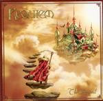

| Artist: | Requiem |
| Title: | The Arrival |
| Label: | Sound Riot |
| Length(s): | 46 minutes |
| Year(s) of release: | 2002 |
| Month of review: | [02/2003] |
| 1) | Arrival | 0.58 |
| 2) | Revival | 4.28 |
| 3) | Broken Alliance | 4.16 |
| 4) | Whisper | 4.45 |
| 5) | The Invisible Touch | 4.25 |
| 6) | Forgotten Path | 7.43 |
| 7) | Halls Of Eternity | 5.30 |
| 8) | Liquid Hours | 6.11 |
| 9) | Masquerade | 8.26 |
On Broken Alliance I am tempted to think of Saviour Machine. That same swollen opera voice, the same kind of bombast, this time laid over a veritable carpet of rhythm guitars. The song sticks together well again, although the melodies get to be a bit too slick at times.
Whisper starts out as a ballad, but has the necessary sharp guitar playing later on. The Invisible Touch features classical tunes and is a big let down after the previous tracks. This is standard fare, cliche.
Forgotten Path opens in wailing fashion, with keyboards popping up for once. At times the music can be quite powerful, the singing is a bit of a jumble in places. However, as a means of variation, this song comes in handy with its focus on atmosphere and the prominent bass work. Halls Of Eternity is back to raging guitars, but without becoming hectic. This one hangs in between cliché lines and some nice ideas, this time the former winning out, sadly enough.
Liquid Hours is with the second and third track my favourite on this album. The driven together harmony playing between guitars and keys in the catchy opening, the biting vocals, (let's forget about the gooey baroque in the middle, just ignore it), and a powerful ending. Closer Masquerade has a classical intro and then, surprise!, twangy American guitars. The vocals are mesmerizing, operatic, and bordering on the pathetic. A nice atmosphere on this one.